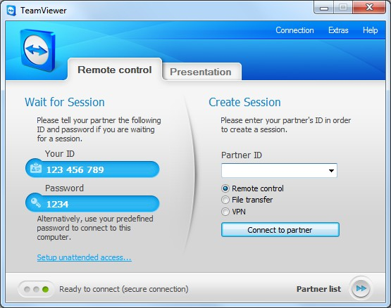

Trong những năm gần dây, những công cụ phần mềm điều khiển từ xa ngày càng xuất hiện nhiều hơn giúp con người có thể điều khiển máy tính từ xa mà không cần sự tiếp xúc trực tiếp tại đó, và việc hỗ trở trở nên đơn giản chỉ bằng một công cụ phần mềm đã trở nên vô cùng đơn giản.
Dưới đây là những phần mềm điều khiển từ xa miễn phí tốt nhất hiện nay.
1. UltraViewer
UltraViewer được coi là một cuộc cách mạng đầu tiên và bắt đầu xuất hiện tại Việt Nam. UltraViewer đã tiên phong trong việc cung cấp công cụ hỗ trợ điều khiển từ xa có chất lượng tương đương với các phiên bản nước ngoài khác. UltraViewer cho phép truy cập miễn phí vĩnh viễn. Bạn có thể dễ dàng sử dụng, đặc biệt do được viết bởi những lập trình viên Việt Nam, do đó mọi tương tác rất phù hợp với con người Việt Nam, hỗ trợ ngôn ngữ tiếng việt, tốc độ truy cập nhanh đảm bảo sự kết nối và khả năng làm việc rất tốt. Đây được coi là một công cụ đáng để ưu tiên hàng đầu khi bạn lựa chọn một công cụ hỗ trợ điều khiển từ xa.
Phần mềm điều khiển từ xa UltraViewer
2 . TeamViewer
TeamViewer là một công cụ cũng khá ấn tượng và được ưa chuộng. Phiên bản có 2 loại là cao cấp và miễn phí. Về tính năng thì hầu hết ai cũng biết nó được sử dụng nhằm mục đích hỗ trợ điều khiển từ xa, với các tính năng ấn tượng dễ truy cập và tạo các kết nối trực tuyến. Tuy nhiên với phiên bản miễn phí, TeamViewer thường bị giới hạn thời gian gây gián đoạn công việc, còn việc mua bản quyền teamviewer phiên bản cao cấp thì chi phí giá thành tương đối cao và giá trị tính bằng đô-la.

TeamViewer
3. Splashtop
Splashtop là một trong các công cụ điều khiển máy tính để bàn từ xa đạt mức 15 triệu người sử dụng. Splashtop có ưu thế là có tốc độ làm mới màn hình và khả năng truyền tải âm thay, video từ xa rất tốt. Đặc biệt Splashtop phù hợp với môi trường lĩnh vực giáo dục, nó có khả năng tạo một lớp học ảo giúp bạn dễ xử lý và điều khiển. Bên cạnh đó, Splashtop cũng có nhiều lựa chọn cho phiên bản cá nhân hay doanh nghiệp.
Splashtop
4. Chrome Remote Desktop
Google Chrome tích hợp một ứng dụng mở rộng trên chính thanh công cụ của nó một chương trình điều khiển từ xa là Chrome Remote Destop . Để sử dụng công cụ này, máy tính hai phía đều cần phải được cài đặt ứng dụng Chrome Remote Desktop Công cụ này cũng có khả năng tuyệt vời gần như không gây ra gián đoạn trong kết nối. Tuy nhiên khả năng thiết lập cài đặt lại khá chậm và tính năng chưa thực sự tuyệt vời cho lắm. Sẽ có một chút phức tạp vì quá trình cài đặt “hơi”nhiều công đoạn, vì thế thường gây khó khăn cho nhiều người khi sử dụng.
Điều khiển từ xa bằng Chrome Remote Desktop
5. Microsoft Remote Desktop
Win 8 sau khi ra mắt đã nhận được rất nhiều sự quan tâm đặc biệt bởi giao diện cũng như các tính năng tích hợp đầy đủ. Trong đó tính năng Remote Desktop hay còn gọi là điều khiển từ xa cũng được tích hợp sẵn và nó cho phép bạn kiểm soát máy tính của mình qua các kết nối mạng khi bạn di chuyển trên đường... Tuy nhiên tính năng này chỉ có mặt trên phiên bản Windows Ultimate hoặc Professional. Và tất nhiên cũng như Chrome Remote Desktop, cho dù nó đã đươc tích hợp sẵn xong bản than nó vẫn chưa phải là hoàn chỉnh mà chỉ là 1 sự hỗ trợ nhất định nào đó trong khả năng cho phép.
Microsoft Remote Desktop
6. TightVNC
TightVNC là một hệ thống hỗ trợ chia sẻ hay theo dõi giao diện máy tính để bàn từ xa khá hay. Với khả năng hỗ trợ dồi dào cho nhiều hệ điều hành, công cụ này khá phổ biến với những người dùng doanh nghiệp và nhà quản lý công nghệ thông tin. Đây cũng được coi là một công cụ điều khiển từ xa free có khả năng tốt và được tin dùng. Tuy nhiên thì giao diện của TighTVNC chưa được đánh giá là tốt cho lắm.
TightVNC
7. Mikogo
Mikogo cũng là 1 lựa chọn thong minh nếu bạn muốn tìm kiếm một phiên bản hỗ trợ điều khiển từ xa nhằm mục đích chia sẻ dữ liệu cho người khác với chất lượng cao. Mikogo cũng cung cấp nhiều tính năng hữu ich như chuyển đổi bảng thuyết trình, chia sẻ các tập tin và ghi âm hay chia sẻ màn hình toàn diện.
Mikogo
Nếu các bạn vẫn phân vân chưa biết nên lựa chọn phần mềm điều khiểu khiển máy tính từ xa nào đế sử dụng, các bạn có thể tải ngay phần mềm điều khiển từ xa UltraViewer về máy để sử dụng vì UltraViewer là phần mềm có giao diện tiếng việt dễ sử dụng nhất và hoàn toàn miễn phí.
Chia sẻ bài viết
Về tác giả
Thùy Linh
When you feel like quitting, remember why you started ....
Phần mềm điều khiển máy tính từ xa UltraViewer đã đạt cột mốc mới về lượng người sử dụng trên toàn cầu. Chúng tôi đang nỗ lực cải tiến sản phẩm không ngừng để đáp ứng nhu cầu của người sử dụng, xin đừng ngần ngại gửi ý kiến góp ý tới chúng tôi.


.jpg)


Viết bình luận (Cancel Reply)